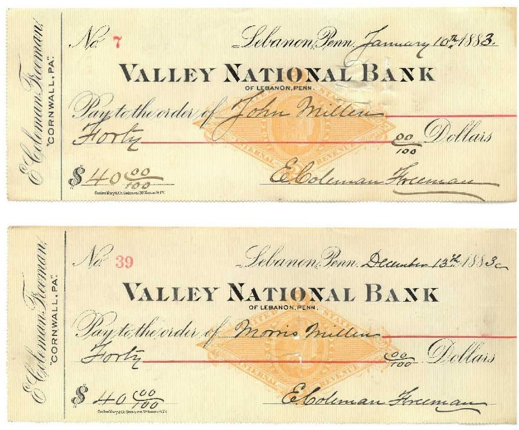

A developing story, following from the history of the Cornwall & Western Railroad (previous chapter) will feature the interesting life of Edward Coleman Freeman.
In addition to the records left behind in the "Buckingham" mansion from his estate that illuminated the story of the railroad that never quite happened, were numerous records of Edward's personal finances. These paint an interesting picture of the younger of the Freeman brothers.
In particular, to set his story in motion, are artifacts recognizing two faithful servants of the Freeman family, two men of African heritage – John Millen and his son Morris Millen.

A previous story of the Coleman coachman (Diverging Roads, chapter 19) in the North Lebanon branch of the family is reflected here in the Cornwall relatives. This project will tell the intriguing story of the Millens as completely as possible.
First published here, on Diverging Roads, October 14, 2026.